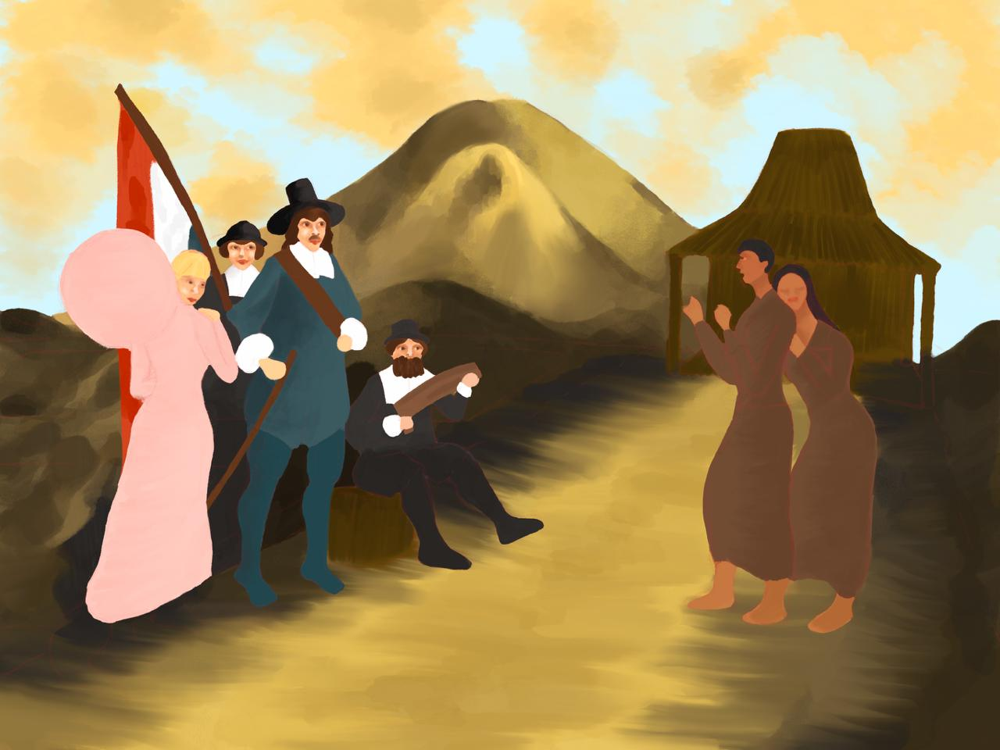
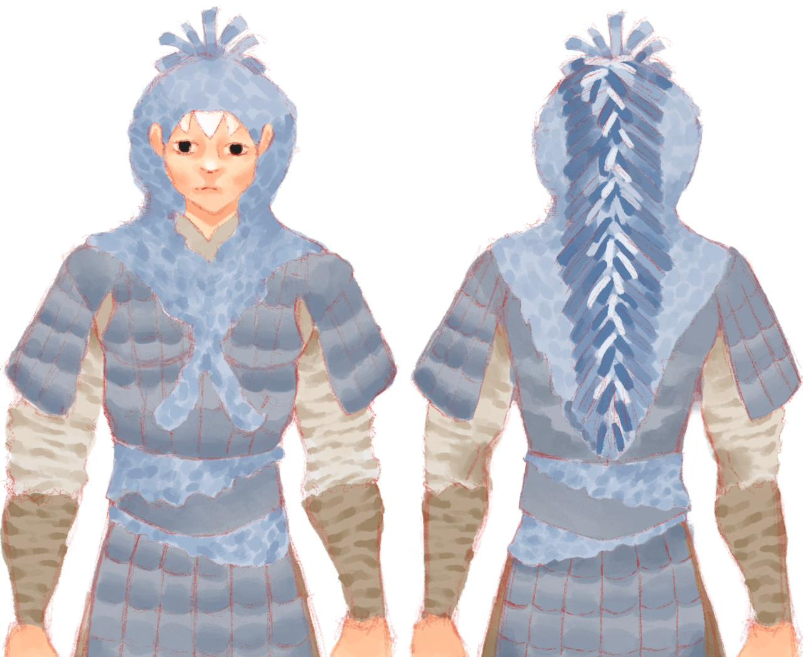

Cornelius Ravelio Joaquin
Kelas: XI-A3
Sekolah: SMA Kolese Kanisius
Hobi: Menggamba dan Menyanyi
Cita-cita: Dokter
Gallery


Tentang Saya
Halo semua, perkenalkan nama saya Cornelius Ravelio Joaquin, biasa dipanggil Cornel dan saat ini menduduki bangku kelas 11 di SMA Kolese Kanisius. Hobi saya adalah menggambar yang tentunya sudah ditekuni sejak SD. Selain menggambar, saya juga suka menyanyi, maka dari itu saya tergabung dalam Persevera (komunitas paduan suara SMA Kolese Kanisius). Jujur, kelas 11 ini lumayan berat karena tuntutan tugas yang semakin banyak dan rumit, namun saya tetap semangat dalam menjalankan hari-hari saya.
Nilai Ulangan Semester
| No | Materi | Nilai |
|---|---|---|
| 1 | Biodata | 75 |
| 2 | UH Tertulis | 75 |
| 3 | Mini Project | 100 |
Project Semester Ini
Project 1
Website Biodata
Project 2
Website Fotografi